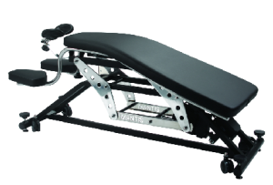
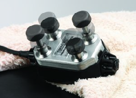
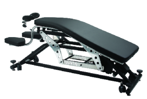
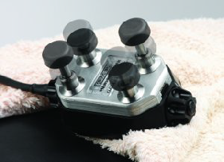

Грижа за грбот во 21 –от век
Терафлекс систем
Безбеден, ефикасен, не инвазивен третман за механички проблеми на `рбетот кој навистина функционира!
 



Се користи повеќе од 15 години во Англија, и за тоа време на илјадници луѓе им го обнови опсегот на движење и им ја олесна и елиминира дури и долгогодишната болка.
Во самиот процес:
Нема вклучено присилна манипулација
Не се потребни лекови
Нема бескрајни посети кои се скапи и одземаат многу време
Може ви звучи премногу добро да биде вистина но ТОА Е вистина!
Третманот е наречен Рефлекс терапија и оваа технологија ја обезбедува Терафлекс системот.
Едноставно кажано:
Се издигнувате над симптомите, го третирате изворот!
Терафлекс третманот е најдобар начин на третирање на вашите проблеми со ‘рбетниот столб.
Целосна информација за третманот ќе најдите на следниов интернет блог: theraflexmacedonia.wordpress.com